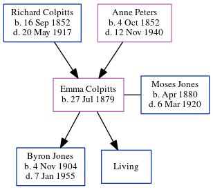

Emma Alverda Jones (née Colpitts) 1879 -
[ Home ] | [ Calendar ] | [ Surnames Index ] | [ Census Index ] | [ Family History ]The 2nd of 8 children of Richard Colpitts and Anne Peters, Emma Colpitts, the third cousin twice-removed on the father's side of Nigel Horne, was born in Pleasant Vale, Albert, New Brunswick, Canada on Jul 27, 18791,2,3 and married Moses Jones (with whom she had 2 children: Byron Moses and Leona, along with 1 surviving child) in Westmorland, New Brunswick, Canada on Jun 24, 19034.
During her life, she was living in Albert, New Brunswick, Canada in 18811; in Elgin, New Brunswick in 18912; and in Westmorland in 19113.
Parents
- Richard Byron was born on Sep 16, 1852
- Anne Atkinson was born on Oct 4, 1852
Children
- Byron Moses was born on Nov 4, 1904
Citations
- 1881 Census of Canada Ancestry.com Operations Inc
- 1891 Census of Canada Ancestry.com Operations Inc (Marital Status: Single; Relation to Head of House: Daughter)
- 1911 Census of Canada Online publication - Provo, UT, USA: Ancestry.com Operations Inc, 2006. .Original data - Library and Archives Canada. Census of Canada, 1911. Ottawa, Ontario, Canada: Library and Archives Canada, 2007. http://www.collectionscanada.gc.ca/databases/census-19 (Marital Status: Married; Relation to Head of House: Wife)
- New Brunswick, Canada, Marriages, 1789-1950
- Canada Census 1891 - Findmypast (was the daughter of the head of the household)
Family Tree
Generated by ged2site. Last updated on Jun 11, 2024